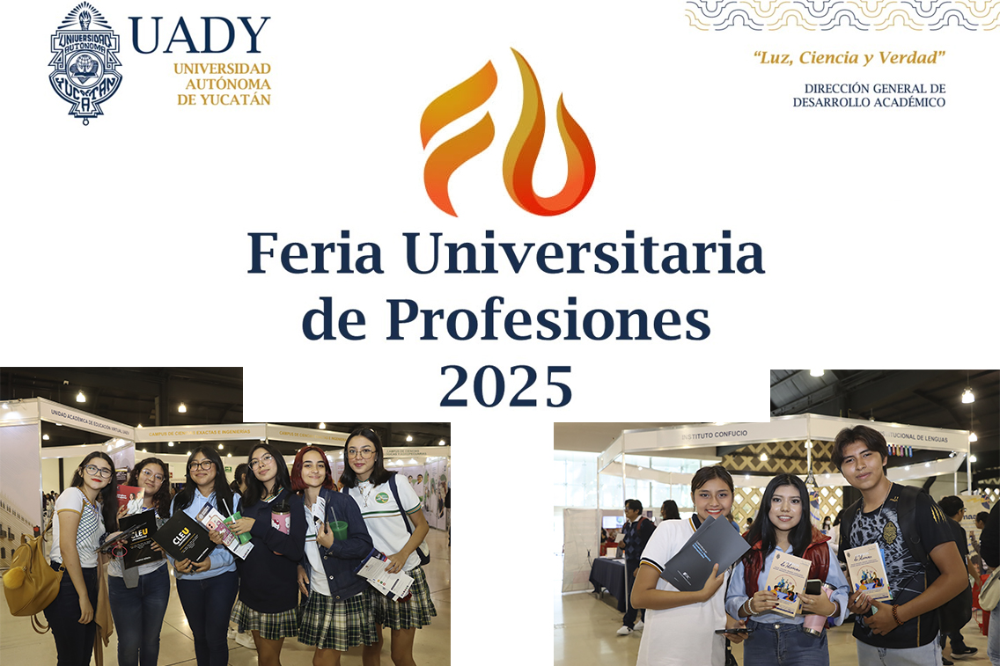

Próximos Eventos
Consulta los eventos académicos, culturales y deportivos que se realizarán en el Estado de Querétaro.
Feria Universitaria 2025
La Feria Universitaria reunirá a más de 50 instituciones educativas y se llevará a cabo el próximo mes en el Centro de Congresos de Querétaro.